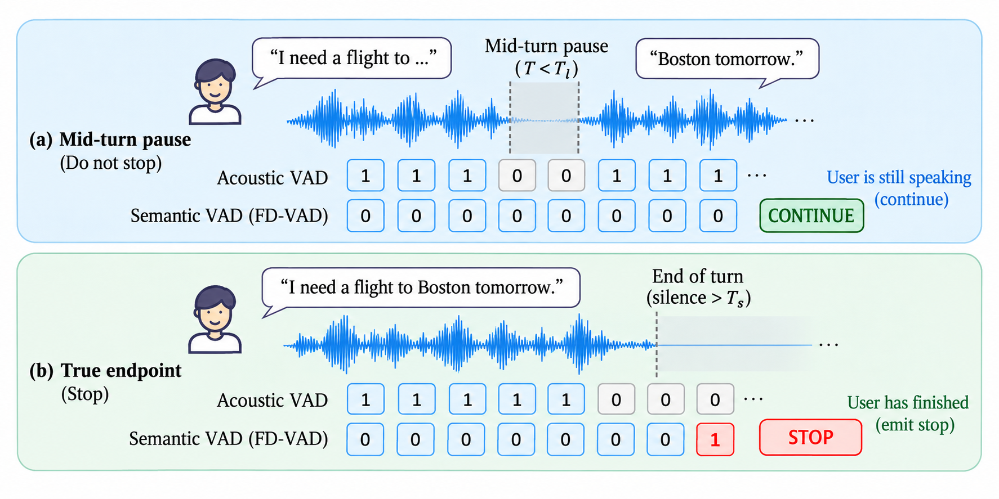
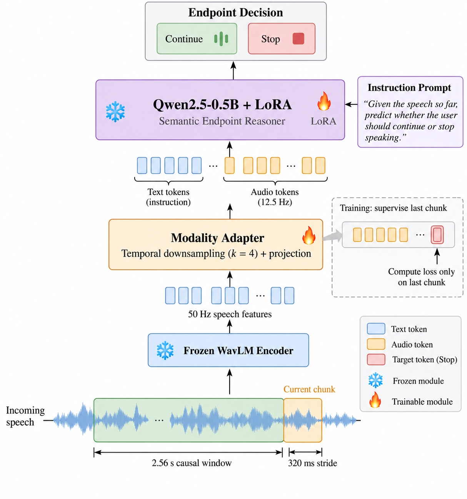

Acoustic VAD
Detects whether speech energy is present. It can find a silence boundary, but a silence can be a hesitation, a planning pause, or the end of a turn.
streamingno semantic completion
Can a voice agent tell the difference between a user who is pausing and a user who is actually done — directly from streaming audio?

Natural turn-taking in full-duplex voice interaction requires determining from partial speech whether a pause reflects hesitation or a completed conversational intent. Acoustic VAD lacks this semantic information, while cascaded ASR-based endpointing introduces transcription dependence and additional processing stages. FD-VAD formulates semantic endpoint detection as a causal audio-language reasoning task and maps bounded causal audio windows directly to CONTINUE/STOP decisions.
The model combines a frozen speech encoder, a lightweight modality adapter, and a parameter-efficiently adapted language model with a last-chunk training objective for streaming inference. Confidence-gated endpoint commitment controls the interruption–delay trade-off, while boundary-focused hard-negative sampling emphasizes ambiguous regions near true turn boundaries.
Detects whether speech energy is present. It can find a silence boundary, but a silence can be a hesitation, a planning pause, or the end of a turn.
Provides lexical semantics, but inserts transcription into the latency-critical turn-taking loop and inherits ASR errors and extra processing stages.
Consumes causal audio directly and predicts whether the user still holds the conversational floor. No transcript generation is required.
Every 320 ms, FD-VAD evaluates at most 2.56 s of causal audio, converts WavLM features into a compact sequence of LLM audio tokens, and predicts a single semantic state.

WavLM-base-plus maps raw waveform to frame-level speech features at 50 Hz.
Two linear layers with ReLU jointly downsample by k = 4 and project speech features into the LLM embedding space.
Adapted audio embeddings are combined with a short instruction prompt. The LLM predicts CONTINUE or STOP.
Training applies the loss only to the state of the terminal chunk, matching the streaming decision made at the newest observation.
A single erroneous STOP can interrupt the user. FD-VAD can commit STOP only when P(STOP) ≥ τ for K consecutive decisions, exposing an explicit operating-point control.
Hard negatives are concentrated near the true endpoint. Training oversamples windows ending within ±2 chunks of the boundary while leaving inference unchanged.
FD-VAD combines high endpoint recall with a low premature-stop rate, while remaining causal and streaming.
on the held-out smart-turn-v3.1 test set, with only 0.6% false-stop on incomplete-speech chunks.
balanced across complete and incomplete turns and comparable to the strongest offline semantic classifier.
zero-shot at FP = 0.097, the highest recall among systems satisfying the benchmark FP ≤ 0.10 constraint.
Recall under the benchmark false-positive constraint. † exceeds FP ≤ 0.10.
| System | Category | Recall ↑ | FP ↓ | Median latency (ms) ↓ |
|---|---|---|---|---|
| VAP | Turn-taking | 0.841 | 0.045 | 463 |
| ESPnet turn-taking | Turn-taking | 0.836 | 0.074 | 895 |
| Kyutai semantic VAD | Semantic | 0.803 | 0.100 | 1024 |
| WavLM-large anchor | Acoustic | 0.825 | 0.100 | 1017 |
| FD-VAD | Ours | 0.853 | 0.097 | 1019 |
| OpenAI server VAD | Semantic | 0.933 | 0.563† | 281 |
Selected systems are shown here for readability; see the paper for the complete benchmark table.
Held-out smart-turn-v3.1. Streaming systems are marked ✓.
| Model | Streaming | Complete | Incomplete | Overall |
|---|---|---|---|---|
| Energy VAD | ✓ | 0.998 | 0.680 | 0.839 |
| VAP | ✓ | 0.728 | 0.489 | 0.608 |
| X2-Turn | ✓ | 0.652 | 0.812 | 0.733 |
| Whisper + LLM | × | 0.860 | 0.768 | 0.814 |
| UltraVAD | × | 0.920 | 0.840 | 0.880 |
| Smart Turn | × | 0.966 | 0.966 | 0.965 |
| FD-VAD | ✓ | 0.968 | 0.962 | 0.966 |
Selected baselines are shown here for readability; the paper reports the full comparison with 95% bootstrap confidence intervals.
Acoustic termination alone performs poorly on incomplete speech, while FD-VAD maintains balanced endpoint accuracy across complete and incomplete turns.
FD-VAD reaches 0.966 utterance-level accuracy while making incremental causal decisions rather than waiting for a completed utterance.
On TurnBench, FD-VAD reaches high zero-shot recall under the FP budget, but its 1019 ms median commit latency is higher than VAP's 463 ms.
Offline cascades wait for the complete utterance before ASR and semantic inference. FD-VAD updates its endpoint state continuously, so post-speech latency is governed by the streaming decision schedule rather than utterance duration.
The code repository provides a simple inference entry point. Model weights are hosted separately on Hugging Face.
# clone the code
git clone https://github.com/fd-vad/fd-vad.git
cd fd-vad
# install
pip install -r requirements.txt
# download the trained adapter / LoRA checkpoint
huggingface-cli download puneetUMD/fd-vad fd_vad.pt --local-dir .
# run end-of-turn inference
python infer.py path/to/audio.wav
# inspect per-320 ms P(STOP)
python infer.py path/to/audio.wav --show-stream@inproceedings{fdvad,
title = {FD-VAD: Semantic Endpoint Detection for Streaming Full-Duplex Speech},
author = {Mathur, Puneet and Manocha, Dinesh},
booktitle = {Submitted},
year = {2026}
}